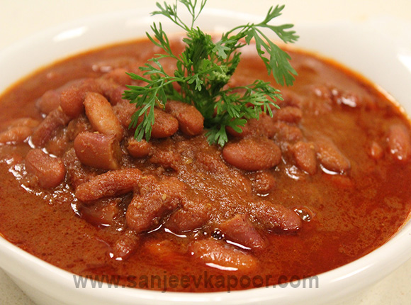

Kashmiri rajma

Description
Rajma is a popular Indian curry made with kidney beans. This recipe is made with aroma of Kashmiri garam masala and a host of other spices.
Ingredients
- 1 1/2 cups rajmah (kidney beans)
- 1 tsp soda bicarb
- 1/2 cup ghee (clarified butter)
- 1/8 tsp heeng (asafoetida)
- 1 tsp zeera (cumin seeds)
- 1 tsp sonth (dried ginger powder)
- 1/2 cup dahi (yogurt)
- 1 tsp Kashmiri garam masala
- 1 tsp ginger paste
- 2 tsp salt to taste
- 1 tsp chilli powder or to taste green chillies-chopped
- 2 tsp dhania (coriander) powder
- Chopped coriander leaves for garnish
Steps
- Soak rajmah and soda in water overnight.
- Drain and cook in fresh water till soft (about 15 minutes in a pressure cooker, after it makes a sound).
- Drain and keep rajmah and water separately till ready to use. Heat ghee and add heeng and jeera.
- When jeera splutters, add sonth, dahi and ginger, stirring vigorously all the time (else the dahi will curdle).
- Saute till fat separates. Add salt, chilli powder, green chilli and rajmah. Saute for a minute or so.
- Make up the drained water of the cooked rajmah to about 1 cup and add to the rajmah.
- Simmer 8-10 minutes, add the garam masala, and dhania, simmer another minute or so and serve hot garnished with the coriander leaves.